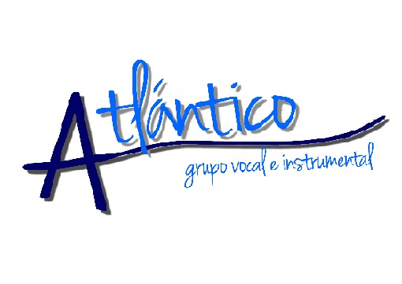
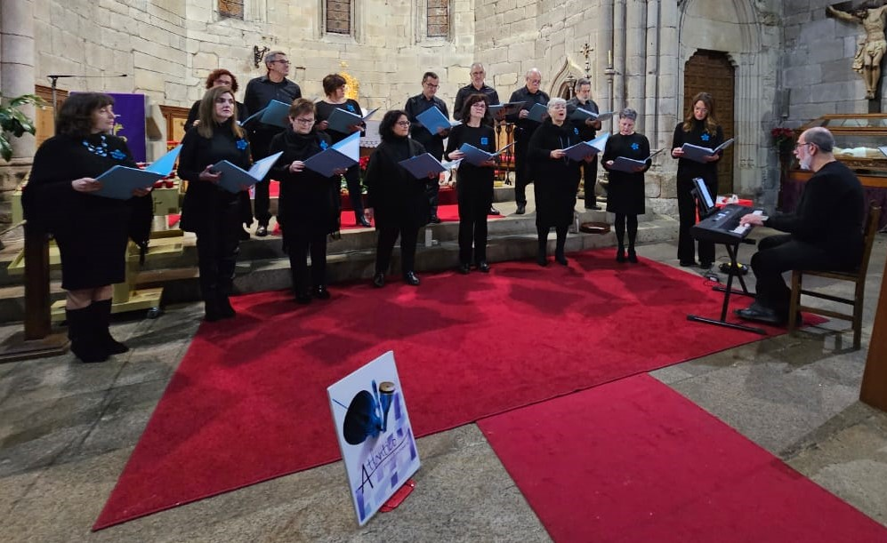

GRUPO VOCAL E INSTRUMENTAL ATLANTICO
Idioma:
Castellano
Gallego
Inglés

Historial Grupo
Currículum - Director
Contacto
Enlaces a Vídeos de Actuaciones
Love of my life
Act. Santiago de Compostela - 30/4/2022
Ave María - Alejandro Guillermo
I'm going up a yonder
Cuando me ves así
La Virgen tiene al niño en brazos
Canción de cuna costera
Si te apetece conocernos y unirte a nuestro proyecto musical siéntete libre de
escribirnos
.